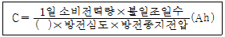
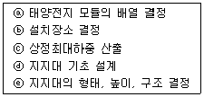
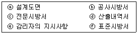
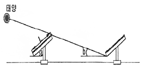
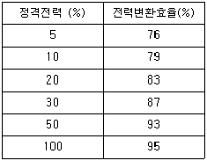
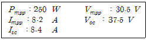
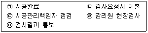
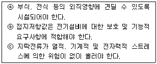
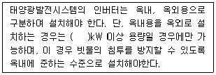
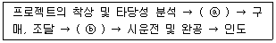

신재생에너지발전설비기사(구) (2016-05-08 기출문제)
1과목: 임의 구분
1. 태양전지별 분광감도의 설명이다. 옳은 것은?
- 박막전지는 적외선을 더 잘 이용한다.
- CdTe와 CIS전지는 중간파장의 빛을 잘 흡수한다.
- 비정질 실리콘 전지는 장파장 빛을 최적으로 흡수한다.
- 결정질 태양전지는 자외선 파장 태양 복사에 민감하게 작용한다.
(정답률: 49%)

2. 단락전류는 태양전지 양단의 전압이 0일 때 흐르는 전류를 의미한다. 다음 중 단락전류의 손실을 발생시키는 원인이 아닌 것은?
- 모듈 라미네이션 공정 불량
- 외부 수분침입에 의한 리본 전극 산화
- 전극의 솔더링 스폿에 의한 충진재 두께 편차
- 자외선에 의한 충진재 내부의 커플링재 분해
(정답률: 57%)
3. 연료전지에 의한 발전 시스템의 특징이 아닌 것은?
- 발전효율이 낮다.
- 폐열이용이 가능하고 종합에너지 효율이 높다.
- 환경성이 높고 저소음, 저공해 발전시스템이다.
- 천연가스, 메탄올, LPG 가스 등 다양한 연료 사용이 가능하다.
(정답률: 81%)
4. 특별 제3종 접지공사의 접지저항 값은 몇 Ω 이하로 유지하여야 하는가?(관련 규정 개정전 문제로 여기서는 기존 정답인 4번을 누르면 정답 처리됩니다. 자세한 내용은 해설을 참고하세요.)
- 100
- 50
- 30
- 10
(정답률: 82%)
5. 연간 전압 감소율이 0.5%인 태양전지 모듈과 인버터의 특성이 아래와 같이 주어질 때 모듈온도 65 ℃에서 20년 동안 Vmp를 300 V 이상 유지하기 위해 직렬연결 모듈이 최소 몇 장이 필요한가? (단, 태양전지 모듈 Vmp = 29.5 V, Vmp 온도계수 = -0.5%/℃, 인버터 최소전압 = 300 V 이다.)
- 8
- 10
- 12
- 14
(정답률: 28%)
6. 인버터의 전기적 보호 등급 Ⅲ의 안전 최저 전압은 얼마인가?
- 최대 AC : 120 V , 최대 DC : 50 V
- 최대 AC : 120 V , 최대 DC : 120 V
- 최대 AC : 50 V , 최대 DC : 50 V
- 최대 AC : 50 V , 최대 DC : 120 V
(정답률: 74%)
7. 수전전압이 22.9 kV이고 3상 단락전류가 10000 A 인 수용가의 수전용 차단기의 차단용량은 몇 MVA 이상이면 되는가? (단, 여유율은 고려하지 않는다.)
- 433
- 447
- 457
- 467
(정답률: 48%)
8. 일정 전압의 직류전원에 저항을 접속하고 전류를 흘릴 때 이 전류값을 20% 증가시키기 위해서는 저항값을 어떻게 하면 되는가?
- 저항값을 20%로 감소시킨다.
- 저항값을 66%로 감소시킨다.
- 저항값을 83%로 감소시킨다.
- 저항값을 120%로 감소시킨다.
(정답률: 81%)
9. 여러 개의 태양전지 모듈의 스트링을 하나의 접속점에 모아 보수·점검 시에 회로를 분리하거나 점검작업을 용이하게 하며, 태양전지 어레이에 고장이 발생해도 정지범위를 최대한 적게 하는 등의 목적으로 사용되는 것은
- 인버터
- 접속함
- 바이패스 소자
- 계통연계 보호계전기
(정답률: 78%)
10. 납축전지와 알칼리축전지에 대한 설명이다. 틀린 것은?
- 납축전지는 클래드식과 페이스트식으로 분류한다.
- 알칼리축전지는 소결식과 포켓식으로 분류한다.
- 납축전지는 알칼리축전지보다 공칭용량이 작다.
- 납축전지는 알칼리축전지에 비해 기전력이 크다.
(정답률: 71%)
11. 태양전지 셀의 종류에서 박막형의 특징이 아닌 것은?
- 온도 특성에 강하다.
- 결정질보다 변환 효율이 낮다
- 결정질 전지보다 얇다.
- 동일 용량 설치시 결정질보다 박막형이 면적을 적게 차지한다.
(정답률: 68%)
12. 다음은 축전지 용량의 산출식이다. ( ) 안에 알맞은 내용은?

- 셀수
- 보수율
- 효율
- 역률
(정답률: 81%)
13. KSC-IEC 규격에 따라 모듈이 뒷면에 표시해야 할 항목이 아닌 것은?
- 공칭 중량
- 내풍압성 등급
- 습윤 누설전류
- 제조년월일 및 제조번호
(정답률: 68%)
14. 태양전지 모듈(module)의 구성재료의 순서가 옳게 나열된 것은?
- 강화유리 태양전지-EVA-Back Sheet EVA
- 강화유리-EVA-태양전지-EVA-Back Sheet
- EVA-태양전지-강화유리-Back Sheet-EVA
- EVA-강화유리-태양전지-EVA-Back Sheet
(정답률: 80%)
15. 인버터 직류 입력 전압이 300 V이고 모듈 최대출력동작전압이 20 V인 경우 태양전지 모듈 직렬 매수는?
- 14
- 15
- 16
- 17
(정답률: 82%)
16. 자가용 발전설비 고장의 영향이 연계계통에 파급되지 않도록 발전설비를 즉시 전력계통과 분리시키는 인버터의 기능은?
- 자동전압 조정기능
- 단독운전 방지기능
- 계통연계 보호기능
- 자동운전 정지기능
(정답률: 62%)
17. 분산형 전원 배전계통 연계시 반드시 설치하지 않아도 되는 보호장치는?
- 결상
- 저전압
- 저주파수
- 역기전력
(정답률: 56%)
18. PN 접합구조의 반도체 소자에 빛을 조사할 때, 전압차를 가지는 전자와 전공의 쌍이 생성되는 현상은?
- 광기전력효과
- 광이온화효과
- 핀치효과
- 광전하효과
(정답률: 71%)
19. 다음 중 발전효율이 가장 높은 태양전지는?
- HIT 태양전지
- CIGS 태양전지
- Organic 태양전지
- Perovskite 태양전지
(정답률: 70%)
20. 궤도전자가 강한 에너지를 받아서 원자내의 궤도를 이탈하여 자유전자가 되는 것을 무엇이라 하는가?
- 여기
- 공진
- 전리
- 방사
(정답률: 71%)
2과목: 임의 구분
21. 태양광 발전원가의 구성 항목 중 초기투자비에 해당하지 않는 것은?
- 계통연계비용
- 인허가 용역비
- 설계 및 감리비
- 운전유지 및 수선비
(정답률: 77%)
22. 태양광 발전시스템의 전기설계 계산서에 해당하지 않는 것은?
- 구조 계산서
- 전압강하 계산서
- 보호계전기 정정치 계산서
- 모듈 및 어레이 직병렬 계산서
(정답률: 70%)
23. 일조시간에 대한 설명으로 틀린 것은?
- 일조시간은 실제로 태양광선이 지면을 내리쬔 시간이다.
- 일조시간과 가조시간과의 비를 일조율(%)이라 한다.
- 구름이 많은 날씨일 경우 가조시간과 일조시간이 일치한다.
- 가조시간이란 한 지바의 해 돋는 시간부터 해지는 시간까지의 시간을 말한다.
(정답률: 80%)
24. 태양전지 어레이 가대를 아래와 같이 설계하고자 한다. 설계 순서를 옳게 나열한 것은?

- ⓐ→ⓒ→ⓔ→ⓑ→ⓓ
- ⓑ→ⓐ→ⓔ→ⓒ→ⓓ
- ⓐ→ⓓ→ⓒ→ⓔ→ⓑ
- ⓑ→ⓒ→ⓐ→ⓔ→ⓓ
(정답률: 72%)
25. 태양전지 병렬 네트워크 방식으로 어레이를 구성하는 것이 가장 적합한 곳은?
- 비나 분이 많이 내리는 지역
- 태양고도의 영향을 받는 북쪽지역
- 눈, 낙엽 등에 의한 음영의 발생이 잦은 지역
- 태양광 어레이와 어레이의 이격거리 미비로 음영을 피할 수 없는 지역
(정답률: 68%)
26. 풍하중을 산출하는 데 사용되는 지역별 설계 기본 풍속(m/s)으로 틀린 것은?
- 경기도 25~30
- 강원도 25~40
- 경상도 25~45
- 제주도 45~60
(정답률: 63%)
27. 태양전지 어레이의 출력이 10800W, 해당지역의 1일 적산 경사면 일사량이 3.74 kWh/m2·일 이라고 하면 하루 동안의 발전량(kWh/일)은? (단, 종합효율은 0.82 로 한다.)
- 13.33
- 33.12
- 53.32
- 61.20
(정답률: 62%)
28. 설계도서 해석 시 우선 순위를 차례대로 나열한 것은?

- ⓐ→ⓑ→ⓒ→ⓓ→ⓔ→ⓕ
- ⓑ→ⓐ→ⓒ→ⓕ→ⓓ→ⓔ
- ⓒ→ⓐ→ⓑ→ⓓ→ⓕ→ⓔ
- ⓔ→ⓑ→ⓐ→ⓕ→ⓒ→ⓓ
(정답률: 77%)
29. 태양전지 어레이의 세로길이(L) 0.6m, 어레이의 경사각을(a)을 33°, 태양의 고도각(b)을 15°로 산정하여 북위 37°지방에서 태양광 발전소를 건설하고자 할 때, 어레이간의 최소 이격거리는 약 몇 m 로 하면 되는가?

- 1.595
- 1.723
- 1.889
- 2.273
(정답률: 57%)
30. 총원가에는 해당되지만 순공사원가의 구성항목이 아닌 것은?
- 간접재료비
- 간접노무비
- 간접경비
- 일반관리비
(정답률: 69%)
31. 건축자재와 태양전지를 결합시켜 지붕, 피사드, 블라인드 등과 같이 건물외피에 적용하는 건축물 일체형 태양광발전시스템의 종류로 옳은 것은?
- HIT
- CPV
- BIPV
- CIGS
(정답률: 81%)
32. 태양광 발전설비 어레이을 정남쪽으로 설치할 경우 북쪽에 인접한 장해물이나 태양전지 어레이 상호간의 설치간격에 따라 음영이 발생하여 발전량 감소를 초래한다. 이 음영의 영향을 받지 않는 상호간의 간격 검토기준이 되는 날은?
- 하지
- 동지
- 춘분
- 추분
(정답률: 77%)
33. 음영의 방지 대책이 아닌 것은?
- 추적식 태양광모듈을 이용한다.
- 음영이 생기지 않도록 어레이를 배치한다.
- 인버터(PCS)의 MPP 추종제어 기능으로 출력손실을 최소화 한다.
- 부분 음영이 발생될 것을 대비해 일정한 셀수마다 바이패스 소자를 설치한다.
(정답률: 54%)
34. 계통연계형 태양광발전시스템 설계를 위한 케이블 선택과 굵기 산정에 필수적인 고려사항이 아닌 것은?
- 케이블의 제작사
- 케이블의 전압규격
- 케이블의 허용전류
- 케이블의 손실 및 전압강하
(정답률: 81%)
35. 태양광 발전소 부지 선정 시 일반적인 고려사항으로 틀린 것은?
- 부지 가격에 대한 평가
- 주변 식생에 의한 음영여부 확인
- 일사량 조사 및 동향배치 가능 여부 확인
- 토사, 암반의 지내력 및 지반, 지질상태 확인
(정답률: 70%)
36. 태양광 발전설비의 고정식 가대와 단축, 양축 추적식 가대에 대한 설명으로 틀린 것은?
- 고정식 보다 양축 추적식이 견고하다.
- 추적식은 디자인 적용시 한계가 있다.
- 발전효율은 양축 추적식이 가장 높다.
- 시설단가는 고정식에 비해 양축 추적식이 비싸다.
(정답률: 75%)
37. 태양광 인버터의 전력변환 효율이 다음과 같을 때 유로변환 효율은 몇 % 인가?

- 90.10
- 90.15
- 90.20
- 90.25
(정답률: 47%)
38. 3000 kW 이하 발전사업 허가 시 필요서류가 아닌 것은?
- 사업계획서
- 송전관계 일람도
- 전기사업 허가신청서
- 5년간 예상사업 손익산출서
(정답률: 73%)
39. 1000 kW 태양광발전시스템 어레이의 직병렬 구성으로 가장 적합한 것은? (단, 인버터의 입력범위는 430~750 V 이며, 기타 조건은 표준상태이다.)

- 18직렬 200병렬
- 18직렬 240병렬
- 20직렬 200병렬
- 20직렬 240병렬
(정답률: 67%)
40. 일반적으로 구조물이나 시설물 등을 공사 또는 제작할 목적으로 상세하게 작성된 도면은?
- 상세도
- 시방서
- 간트도표
- 내역서
(정답률: 78%)
3과목: 임의 구분
41. 사용 전 검사 시 태양전지 모듈 또는 패널의 점검에 관한 설명 중 틀린 것은?
- 각 모듈의 모델번호가 설계도면과 일치하는지 확인하여야 한다.
- 지붕 설치형 어레이는 수검자가 지상에서 육안으로 점검한다.
- 검사자는 모듈의 유형과 설치개수 등을 1000 lx 이상의 조명 아래에서 육안으로 점검한다.
- 사용 전 검사 시 공사계획 인가(신고)서의 내용과 일치하는지 태양전지 모듈의 정격 용량을 확인하여 이를 사용 전 검사 필증에 표기하여야 한다.
(정답률: 72%)
42. 태양광 모듈 시공 시 감전사고 방지를 위한 대책이 아닌 것은?
- 면장갑을 착용한다.
- 우천 시 작업하지 않는다.
- 절연 처리된 공구를 사용한다.
- 태양전지 모듈 표면에 차광 시트를 부착한다.
(정답률: 79%)
43. 전선 재료의 구비조건으로 틀린 것은?
- 도전율이 클 것
- 비중이 작을 것
- 가요성이 작을 것
- 기계적 강도가 클 것
(정답률: 72%)
44. 태양전지모듈의 지중배선 시공에 대한 설명으로 틀린 것은?
- 지중매설관은 배선용 탄소강 강관, 내충격성 강화비닐 전선관을 사용한다.
- 지중배관 시 중량물의 압력을 받는 경우 1.2m 이상의 깊이로 매설한다.
- 지중전선로의 매설개소에는 필요에 따라 매설깊이, 전선방향 등을 지상에 표기한다.
- 지중배관이 지나는 지표면에 배관의 재질, 수량, 길이, 재원 등을 표시한 지시서를 포설한다.
(정답률: 57%)
45. 전력계통에 태양광발전시스템을 연계 시 전력품질의 고려사항이 아닌 것은?
- 역률
- 플리커
- 유도장해
- 고조파전류
(정답률: 47%)
46. 태양광 발전설비의 모듈, 접속함, 인버터 등에 접속하는 배선공사 방법에 대한 설명으로 틀린 것은?
- 태양전기 모듈간 배선에 사용하는 전선의 굵기는 1.0mm2 이상이어야 한다.
- 스트링 접속도선은 단락전류보다 1.25배 이상의 전류를 수용할 수 있어야 한다.
- 태양전지 모듈 뒷면의 접속단자 연결 시 극성에 유의해야 한다.
- 접속함의 설치는 모듈구성에 따라 어레이 부근에 설치하는 것이 바람직하다.
(정답률: 73%)
47. 구조물 및 자재 종류별 검사에서 감리원의 검사절차로 옳은 것은?

- ㉠→㉢→㉡→㉣→㉤
- ㉠→㉢→㉣→㉡→㉤
- ㉠→㉡→㉢→㉣→㉤
- ㉠→㉣→㉡→㉢→㉤
(정답률: 67%)
48. 감리용역이 완료된 때에는 며칠 이내에 공사감리 완료보고서를 제출하여야 하는가?(2018년 11월 ⑤일 개정된 규정 적용됨)
- 10일
- 15일
- 30일
- 45일
(정답률: 32%)
49. 퓨즈 용량 선정 시 적용하는 단락전류는?
- 대칭 단락전류 실효값
- 최대 비대칭 단락전류 순시값
- 최대 비대칭 단락전류 실효값
- 3상 평균 비대칭 단락전류 실효값
(정답률: 52%)
50. 태양광 발전시스템의 시공절차에 포함되는 것은?
- 인버터 설치공사
- 설치장소의 조사
- 모듈 직렬 개수 선정
- 태양광 어레이의 발전량 산출
(정답률: 70%)
51. 다음 보기 중 접지설비 시공방법으로 옳은 것을 모두 고르면?

- ⓐ
- ⓐ, ⓑ
- ⓑ, ⓒ
- ⓐ, ⓑ, ⓒ
(정답률: 78%)
52. 접속함 설치공사 중 고려사항이 아닌 것은?
- 접속함 설치위치는 어레이 근처가 적합하다.
- 외함의 재질은 가급적 SUS30s 재질로 제작설치한다.
- 접속함은 풍합 및 설계하중에 견디고 방수, 방부형으로 제작한다.
- 역류 방지 다이오드의 용량은 모듈 단락전류의 4배 이상으로 한다.
(정답률: 72%)
53. 태양전지판에서 인버터 입력단간 및 인버터 출력단과 계통연계점간의 전압강하는 몇 %를 초과하지 않아야 하는가?
- 3%
- 4%
- 5%
- 6%
(정답률: 59%)
54. 무 변압기형 인버터의 설명으로 알맞은 것은?
- 변압기형 인버터보다 효율이 낮다.
- 변압기형 인버터보다 무게가 증가한다.
- 변압기형 인버터보다 크기가 증가한다.
- 변압기형 인버터보다 노이즈 간섭이 증가한다.
(정답률: 61%)
55. 일반 지붕재에 태양전지 모듈을 넣은 지붕재 방식은?
- 지붕재 마감형
- 지붕재 일체형
- 지붕재 건재형
- 지붕재 설치형
(정답률: 73%)
56. 방화구획 관통부의 처리 시 배선을 옥외에서 옥내로 끌어들이는 관통부분에 충족하여야 하는 사항 2가지는?
- 내열성과 가요성
- 난연성과 내후성
- 난연성과 내열성
- 내열성과 내후성
(정답률: 69%)
57. 다음 ( )안에 들어갈 용량은 몇 kW이상인가?

- 3
- 5
- 10
- 20
(정답률: 54%)
58. 직류 송전방식 방식과 비교했을 때 교류 송전방식의 장점이 아닌 것은?
- 안정도가 좋다.
- 회전자계를 쉽게 얻을 수 있다.
- 전압의 승압, 강압변경이 용이하다.
- 교류방식으로 일관된 운용을 기할 수 있다.
(정답률: 63%)
59. 지지층이 얕은 태양광발전소 부지에 사용되는 기초는?
- 케이슨 기초
- 말뚝기초
- 피어 기초
- 직접기초
(정답률: 73%)
60. 건설 생산 체계 중 건설 생산 추진 순서이다. 생산 추진에 대한 순서로 옳은 것은?

- ⓐ 설계, ⓑ 시공
- ⓐ 현장조사, ⓑ 시공
- ⓐ 입찰, ⓑ 설계
- ⓐ 현장조사, ⓑ 설계
(정답률: 70%)
4과목: 임의 구분
61. 태양광 발전시스템의 안전관리 대책으로 추락사고 예방을 위한 조치사항 아닌 것은?
- 안전모 착용
- 절연장갑 착용
- 안전벨트 착용
- 안전 난간대 설치
(정답률: 76%)
62. 지방자치단체를 당사자로 하는 계약에 관한 법률 시행규칙에 의해 하자검사를 하는 자는 담보책임의 존속기간 중 연 몇 회 이상 정기적으로 하자검사를 하여야하는가?
- 1
- 2
- 3
- 4
(정답률: 51%)
63. 산업통상자원부의 허가가 필요한 설비용량(kW)은? (단, 제주도 제외)
- 1000
- 2000
- 3000
- 4000
(정답률: 39%)
64. 태양광 발전 송변전설비의 일상순시점검내용으로 틀린 것은?
- 접지선의 단선, 부식여부를 확인한다.
- 모선지지물의 이상소음, 이상한 냄새가 없는지 확인하다.
- 모든 설비는 정전상태를 유지하고 주요충전부는 접지를 한다.
- 외함을 열어 확인할 경우, 안전장구를 착용하고 충전부와 이격거리를 유지한다.
(정답률: 71%)
65. 태양광발전 시스템의 운전상태에 따른 발생신호에 대한 설명으로 틀린 것은?
- 인버터에 이상이 발생하면 인버터는 자동으로 정지하고 이상신호를 나타낸다.
- 태양전지 전압이 저전압 또는 과저전압이 되면 이상신호를 나타내고 인버터는 MC는 ON 상태로 정지한다.
- 한전 전력계통에서 정전이 발생하면 0.5초 이내에 인버터는 정지하고 복전 확인 후 5분 이후에 재기동 한다.
- 정상운전 시에는 태양전지로부터 전력을 공급받아 인버터가 계통전압과 동기로 운전을 하며 계통과 부하에 전력을 공급한다.
(정답률: 71%)
66. 사업용 태양광 발전설비의 사용 전 검사 중 차단기 본체 심사의 세부검사 내용이 아닌 것은?
- 절연내력
- 접지시공상태
- Tap 절환장치
- 절연유 및 내압시험(OCB)
(정답률: 49%)
67. 인버터 절연저항 측정 시 주의사항으로 틀린 것은?
- 정격에 약한 회로들은 회로에서 분리하여 측정한다.
- 정격전압이 입출력과 다를 때는 낮은 측의 전압을 선택기준으로 한다.
- 입출력단자에 주회로 이외 제어단자 등이 있는 경우 이것을 포함해서 측정한다.
- 절연변압기를 장착하지 않은 인버터는 제조사가 추천하는 방법에 따라 측정한다.
(정답률: 68%)
68. 태양광 발전시스템 보수점검 시 점검 전의 유의사항으로 틀린 것은?
- 점검 전에 접지선을 제거한다.
- 절연용 보호기구를 준비한다.
- 응급처치 방법 및 설비, 기계의 안전을 확인한다.
- 비상연락망을 사전확인하여 만일의 사태에 신속히 대처한다.
(정답률: 75%)
69. 결정질 태양전지모듈 성능평가를 위한 시험장치가 아닌 것은?
- 염수분무장치
- 솔라 시뮬레이터
- 기계적 하중 시험장치
- 테스트핑거 및 테스트 핀
(정답률: 52%)
70. 중대형 태양광발전용 인버터의 누설전류시험에 대한 설명이 아닌 것은?
- 품질기준은 누설전류가 5mA 이하이다.
- 교류 전원을 정격 전압 및 정격 주파수로 운전한다.
- 직류 전원은 인버터 출력이 정격 출력이 되도록 설정한다.
- 인버터의 기체와 대지 사이에 100Ω 이상의 저항을 접속한다.
(정답률: 64%)
71. 안전보호구 관리요령으로 틀린 것은?
- 사용 후 세척하여 보관할 것
- 세척 후에는 건조시켜 보관할 것
- 정기적으로 점검 관리하여 보관할 것
- 청결하고 습기가 있는 곳에 보관할 것
(정답률: 73%)
72. 태양광 발전시스템 운영에 관한 설명으로 틀린 것은?
- 시설용량은 부하의 용도 및 적정 사용량을 합산한 연평균 사용량에 따라 결정된다.
- 발전량은 봄·가을이 많으며 여름·겨울에는 기후여건에 따라 감소한다.
- 모듈 표면의 온도를 조절해 줄 필요가 있다.
- 태양광 발전 설비의 고장 요인은 대부분 인버터에서 발생하므로 정기 점검이 필요하다.
(정답률: 52%)
73. 태양광 발전설비의 일상점검 항목이 아닌 것은?
- 모듈간 배선의 손상여부
- 인버터의 이상음 발생여부
- 접지저항의 규정 값 이하여부
- 모듈 표면의 오염 및 파손여부
(정답률: 76%)
74. 계통연계형 인버터의 계통 전압 불평형 시험의 품질기준으로 틀린 것은?
- 역률이 0.95 이상일 것
- 정격 출력에서 정상적으로 동작할 것
- 절연저항은 1MΩ 이상이며, 상용 주파수 내전압에 1분간 견딜 것
- 출력 전류의 총합 왜형률이 5%이하, 각 차수별 왜형률 3% 이하 일 것
(정답률: 51%)
75. 태양광 발전시스템의 계측 및 표시에 필요한 기기로 틀린 것은?
- 교류회로 전압 측정을 위한 분류기
- 계측 데이터를 복사, 보존하기 위한 기억장치
- 검출된 전압, 전류, 전력 등의 데이터 전송을 위한 신호변환기
- 일시 계측 데이터를 적산하여 평균값 및 적산 값을 얻기 위한 연산장치
(정답률: 57%)
76. 태양광 발전시스템용 축건지의 정기점검 항목 중 육안점검의 점검항목이 아닌 것은?
- 외관점검
- 단자전압
- 전해액 비중
- 전해액면 저하
(정답률: 64%)
77. 시스템 운영 시 비치목록으로 틀린 것은?
- 발전 시스템 피난안내도
- 발전 시스템 운영 매뉴얼
- 발전 시스템 긴급복구 안내문
- 전기안전관리자용 정기 점검표
(정답률: 54%)
78. 자가용전기설비의 정기검사항목 중 태양광전지의 전기 전자적 특성시험항목으로 틀린 것은?
- 최대출력
- 개방전압
- 단락전류
- 절연저항
(정답률: 49%)
79. 발전설비용량 3000 kW인 발전사업 허가 신청 시 첨부 서류가 아닌 것은?
- 사업 계획서
- 발전원가 명세서
- 송전관계 일람도
- 전기설비 개요서
(정답률: 32%)
80. 인버터 과온(inverter over temperature) 고장 표시가 있을 때, 가장 먼저 조치하는 방법으로 적절한 것은?
- 인버터 누설전류를 확인한다.
- 인버터의 냉각계통의 이상유무를 확인한다.
- 송변정설비와 연결되는 배전선의 절연저항을 확인한다.
- 고조파의 국부과열여부를 확인하기 위해 고조파 함유율을 조사한다.
(정답률: 69%)
5과목: 임의 구분
81. 발전차액의 지원을 위한 기준가격의 산정기준으로 틀린 것은?
- 신·재생에너지 발전사업자의 송전·배전선로 이용요금
- 신·재생에너지 발전기술의 상용화 수준 및 시장 보급 여건
- 운전 중인 신·재생에너지 발전사업자의 경영 여건 및 운전 실적
- 전력시장에서의 신·재생에너지 발전에 의하여 공급한 전력의 거래 건수
(정답률: 46%)
82. 신·재생에너지의 기술개발 및 이용·보급을 촉진하기 위한 기본계획에 대한 설명으로 틀린 것은?
- 기본계획은 5년마다 수립하여야 한다.
- 기본계획의 계획기간은 10년 이상으로 한다.
- 신·재생에너지 기술수준의 평가와 보급전망 및 기대효과가 포함된다.
- 총에너지생산량 중 신·재생에너지소비량이 차지하는 비율의 목표가 포함된다.
(정답률: 47%)
83. 접지극으로 사용할 수 없는 것은?
- 접지봉
- 접지판
- 금속제 가스관
- 금속제 수도관
(정답률: 71%)
84. 축전지실 등의 시설조건으로 틀린 것은?
- 축전지실은 발전기실과 동일한 장소에 시설하여야 한다.
- 축전지실 등은 폭발성의 가스가 축적되지 않도록 환기장치 등을 시설하여야 한다.
- 옥내전로에 연계되는 축전지는 비접지측 도체에 과전류보호장치를 시설하여야 한다.
- 30 V를 초과하는 축전지는 비접지측 도체에 쉽게 차단할 수 있는 곳에 개폐기를 시설하여야한다.
(정답률: 69%)
85. 고압 가공전선으로 내열 동합금선을 사용하는 경우 안전율이 몇 이상이 되는 이도로 시설하여야 하는가?
- 2.0
- 2.2
- 2.5
- 4.0
(정답률: 57%)
86. 3상 4선식 22.9 kV 중성점 다중 접지식 가공전선로의 전로와 대지 사이의 절연 내력 시험전압은 몇 V 인가?
- 28625
- 22900
- 21068
- 16488
(정답률: 62%)
87. 접지공사에 사용하는 전선의 단면적이 틀린 것은?(관련 규정 개정전 문제로 여기서는 기존 정답인 4번을 누르면 정답 처리됩니다. 자세한 내용은 해설을 참고하세요.)
- 제1종 접지공사에서 접지선의 굵기는 공칭단면적 6mm2 이상의 연동선
- 제2종 접지공사에서 접지선의 굵기는 공칭단면적 16mm2 이상의 연동선
- 제3종 접지공사에서 접지선의 굵기는 공칭단면적 2.5mm2 이상의 연동선
- 특별 제3종 접지공사에서 접지선의 굵기는 공칭단면적 4mm2 이상의 연동선
(정답률: 68%)
88. 전기를 생산하여 이를 전력시장을 통하여 전기판매업자에게 공급하는 것을 주된 목적으로 하는 사업을 무엇이라 하는가?
- 송전사업
- 배전사업
- 발전사업
- 변전사업
(정답률: 68%)
89. 저탄소 녹생성장 기본법의 목적이 아닌 것은?
- 신에너지 및 재생에너지의 기본법이다.
- 저탄소 사회구현을 통한 국민의 삶의 질을 높인다.
- 녹색기술과 녹색산업을 새로운 성장동력으로 활용한다.
- 경제와 환경의 조화로운 발전을 위하여 저탄소 녹색성장에 필요한 기반을 조성한다.
(정답률: 62%)
90. 분산형전원을 인버터를 이용하여 전력계통에 연계하는 경우 인버터로부터 직류가 계통으로 유출되는 것을 방지하기 위하여 접속점과 인버터 사이에 설치하는 것은? (단, 단권변압기를 제외한다.)
- 차단기
- 전동기
- 보호계전기
- 상용주파수 변압기
(정답률: 59%)
91. 신재생에너지의 이용·보급을 촉진하기 위한 보급 사업에 해당하지 않는 것은?
- 신기술의 적용사업 및 시범사업
- 지방자치단체와 연계한 보급사업
- 신·재생에너지 국제표준화 적용사업
- 환경친화적 신·재생에너지 시범단지 조성사업
(정답률: 50%)
92. 신·재생에너지발전사업자가 도서지역에서 생산한 전력을 전력시장에서 거래하지 않아도 되는 발전설비용량은?
- 1000 kW 이하
- 2000 kW 이하
- 3000 kW 이하
- 4000 kW 이하
(정답률: 63%)
93. 전기안전관리업무를 개인대행자가 대행할 수 있는 태양광발전설비의 용량은?
- 200 kW 미만
- 250 kW 미만
- 300 kW 미만
- 350 kW 미만
(정답률: 60%)
94. 신·재생에너지정책심의회의 심의를 거쳐 신·재생에너지의 기술개발 및 이용·보급을 촉진하기 위한 기본계획을 수립하는 자는?
- 환경부장관
- 행정자치부장관
- 고용노동부장관
- 산업통상자원부장관
(정답률: 76%)
95. 제3종 접지공사를 시행하여야 하는 경우 금속제와 대지 사이의 전기저항 값이 몇 Ω이하이면 접지공사를 생략할 수 있는가?(관련 규정 개정전 문제로 여기서는 기존 정답인 4번을 누르면 정답 처리됩니다. 자세한 내용은 해설을 참고하세요.)
- 3
- 5
- 10
- 100
(정답률: 59%)
96. 다음 중 신·재생에너지정책심의회 위원으로 소속공무원을 지명할 수 없는 기관은?
- 기획재정부
- 보건복지부
- 국토교통부
- 농림축산식품부
(정답률: 62%)
97. 저압 가공 인입선의 시설에 대한 설명으로 틀린 것은?
- 전선은 절연전선, 다심형 전선 또는 케이블일 것
- 전선은 지름 1.6㎜의 경동선 또는 이와 동등 이상의 세기 및 굵기일 것
- 전선의 높이는 철도 및 궤도를 횡단하는 경우에는 레일면 상6.5m 이상일 것
- 전선의 높이는 횡단보도교의 위에 시설하는 경우에는 노면 상 3m 이상 일 것
(정답률: 57%)
98. 저탄소 녹색성장 추진의 기본원칙에 대한 설명 중 틀린 것은?
- 정부는 시장 기능을 활성화하고 정부가 주도하여 저탄소 녹색성장을 추진한다.
- 정부는 사회·경제 활동에서 에너지와 자원이용의 효율성을 높이고 자원순환을 촉진한다.
- 정부는 자연자원과 환경의 가치를 보존하면서 국토와 도시, 건물과 교통, 도로·항만·상하수도 등 기반시설을 저탄소 녹색성장에 적합하게 개편한다.
- 정부는 국민 모두가 참여하고 국가기관, 지방자치단체, 기업, 경제단체 및 시민단체가 협력하여 저탄소 녹색성장을 구현하도록 노력한다.
(정답률: 63%)
99. 신재생에너지 발전 사업자가 관련법에 따라 산업통상자원부장관으로부터 발전차액을 반환 요구받았을 경우 그 이행을 며칠이내에 하여야 하는가?
- 100일
- 50일
- 30일
- 15일
(정답률: 68%)
100. 신에너지 및 재생에너지 개발 이용 보급촉진법에 따른 바이오에너지 등의 기준 및 범위에 관한 설명 중 에너지원의 종류와 그 범위가 잘못 연결된 것은?
- 석탄을 액화·가스화한 에너지 - 증기공급용에너지
- 중질잔사유를 가스화한 에너지 - 합성가스
- 바이오에너지 - 동물·식물의 유지를 변환시킨 바이오디젤
- 폐기물에너지 - 쓰레기매립장의 유기성폐기물을 변환시킨 매립지가스
(정답률: 51%)